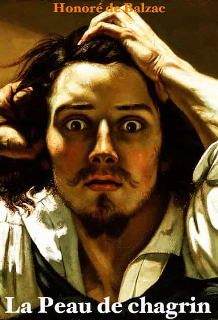

Dawn Pine (aka TheMaleBrain) is an Israeli 40+ divorced father of 2, former casualty of the blue-pill. Since he has taken the red pill his hobbies are: working out, writing, mentoring, harem management and self improvement.


I recently read, for the first time, the great novel “La Peau de chagrin” (The Skin of Sorrow or The Wild Ass’s Skin) by Honoré de Balzac. Balzac is considered to be one of the great 19th century French writers. He is regarded as one of the founders of the Realism in Europe’s literature. The guy, apart from being a great writer and journalist (when it was still a worthy profession), was also very red pill. At the age of 30, still not married, he published the book: “The Physiology of Marriage” where one can find the following text:
Marriage is a fight to the death, before which the wedded couple ask a blessing from heaven, because it is the rashest of all undertakings to swear eternal love; the fight at once commences and victory, that is to say liberty, remains in the hands of the cleverer of the two…
Find some means by which her sum of force which inconveniences you may be carried off, by some occupation which shall entirely absorb her strength. Without setting your wife to work the crank of a machine, there are a thousand ways of tiring her out under the load of constant work.
Satire or not, the guy actually understood females.
You may find the text here
The book consists of three sections: “Le Talisman” (“The Talisman”), “La Femme sans cœur” (“The Woman without a Heart”), and “L’Agonie” (“The Agony”). The first edition contained a Preface and a “Moralité”, which were excised from subsequent versions. A two-page Epilogue appears at the end of the final section.

“Le Talisman” is the plot of a young man named Raphaël de Valentin, who wagers his last coin and loses, then proceeds to the river Seine to drown himself. On the way, he decides to enter an unusual shop. The elderly shopkeeper leads him to a piece of Chagrin hanging on the wall. It is inscribed with “Oriental” writing. The skin promises to fulfill any wish of its owner, shrinking slightly upon the fulfillment of each desire, until its owner dies. Valentin waves away the shopkeeper’s warnings and takes the skin, wishing for a royal banquet, filled with wine, women, and friends. He is immediately met by acquaintances who invite him to such an event; they spend hours eating, drinking, and talking.
Part two, “La Femme sans cœur”, is narrated as a flashback from Valentin’s point of view. He tells about his early days as a scholar, living in poverty with an elderly landlord and her daughter Pauline, while trying fruitlessly to win the heart of a beautiful but aloof woman named Foedora (yes, like the hat). Unable to win her affection, however, he becomes the miserable and destitute man found at the start of “Le Talisman”.
“L’Agonie” begins several years after the feast of parts one and two. Valentin, having used the talisman to secure a large income, finds both the skin and his health dwindling. He tries to break the curse by getting rid of the skin, but fails. He organizes his home to avoid the possibility of wishing for anything. Events beyond his control cause him to wish for various things, however, and the skin continues to recede. Desperate, the sickly Valentin tries to find some way of stretching the skin, and takes a trip to a spa town in the hope of recovering his health.
With the skin no larger than a leaf, he is visited by Pauline in his room. She expresses her love for him. When she learns the truth about the Chagrin, she is horrified. Raphaël cannot control his desire for her and she rushes out to escape him and so save his life. He pounds on the door and declares both his love and his desire to die in her arms. She, meanwhile, is trying to kill herself to free him from his desire. He breaks down the door, they consummate their love in a fiery moment of passion, and he dies.
The first, and maybe the most important one is, “Don’t get sucked into oneitis”. Balzac masterfully portrays the way our hero gets oneitis for Foedora. This girl collects orbiters who provide attention, and showers her with resources. And of course, they don’t get to touch her. She clearly states in the book that she likes the situation as it is. As a Femme Fatale, she takes advantage of societies rules in her favor. So there is nothing new under the sun.

That oneitis destroy’s our hero’s life and send him to “make a deal with the devil,” which drives the story. The reason for that affection is more than looks, it’s her un-attainability.
The next lesson is that passivity will make you pay dearly. Our hero is driven by others and his emotions. Every one he comes across spins him to a new trail. It is a “Dog Eat Dog” world, and Balzac’s portrait of early 19th century society shows it. Everyone has an angle. The only one who actually takes care of him (Pauline) is pushed aside by him. He also doesn’t take his goals seriously (he writes a book for three years and then just gives up). When he understand that he will die, he makes an effort to “freeze” his life in order to preserve it.
The next one is that a balanced life and fortitude wins in the end. Our hero suffers poverty and goes to extreme wealth. He also swings from mania (being in love) to depression. Almost all other characters seem more balanced. They may stumble from time to time, but they show fortitude and balance. Even if their goals are dubious (Rastignac) or honorable (Pauline) they have a far balanced life and character. So they succeed more in getting what they want.
I recommend the book, if you can muster the patience to read through all the detailed description and nuances that Balzac provides.
Click here to view the book on Amazon.
Read Next: 16 Things I Learned From Mark Twain